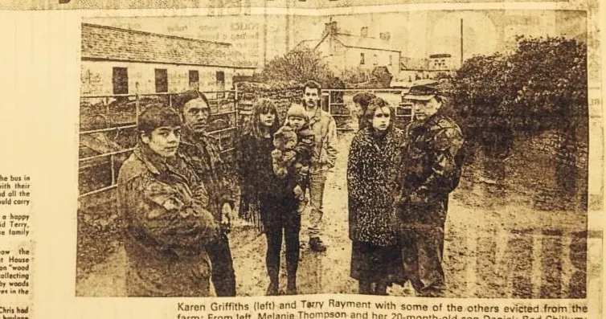

… who lived at Great House Farm, Llan-dough, near Cardiff […] Mr Buckler, evicted from the farm house by BP Properties, who demolished the building a week later […]
[…] Buckler, aged 40, who lived with family at Great House Farm, Llan-dough, until [it] was demolished by BP Properties this week, was freed on bail by magistrates yesterday. He faces charges […]
Source
South Wales Echo, Saturday 10 December 1988 (British Newspaper Archive search extract). Legal Wiki EV-0109 · GHF-E090-N15-10.
[…] a bid to stop BP Properties profiting from the demolition earlier this week [of] an 800-year-old farmhouse on the outskirts of Cardiff. A small group of Llan-dough villagers met local councillors last night to express their anger at the way BP had demolished […]
Source
South Wales Echo, Friday 9 December 1988 (British Newspaper Archive search extract). Legal Wiki EV-0108 · GHF-E090-N15-09.
… a Vale of Glamorgan councillor and BP pensioner said the decision by BP Properties to flatten the buildings was ‘disgusting’. He plans to write to them in protest. Mr Billy Buckler’s family had battled for 33 years to prove they owned […]
Source
South Wales Echo, Wednesday 7 December 1988 (British Newspaper Archive search extract). Legal Wiki EV-0107 · GHF-E090-N15-08.
Tears flow as 800 year-old farm house is razed at last
THE FINAL chapter in the 35-year battle over the ownership of Great House Farm in Llandough ended early yesterday when a team moved in to demolish the 800-year-old farm house.
… Her husband’s family have been battling for more than 30 years to prove they owned the historic farmhouse at Llandough. That fight came to an end yesterday afternoon in the High Court in Cardiff and within hours owners BP Properties …
“A spokesperson there told the Western Mail the house was not of sufficient architectural merit and the land on which it stands was not of sufficient archaeological interest.”
A FAMILY’S long and bitter battle for an historic farmhouse appeared to be over last night after a High Court decision went against them and the Welsh historic monuments organisation decided to take no action.
👍❤️ The courts
Source
Western Mail, 6 December 1988 (cutting annotated “Western Mail 6 Dec 1988”). Legal Wiki EV-0105 · GHF-E090-N10.
It would be novel for a court in this country to grant an injunction to hold up the effects of a judgment until the Court of Human Rights should rule on it, said the judge.
THE threatened farmhouse at the centre of an eviction row will be visited by historic buildings inspectors this weekend to see if it is worth saving from demolition.
EVICTED farmer Bill Buckler, caught up in a 33-year wrangle over his South Wales home, was taken from his hospital bed to face charges of assault on two bailiffs.
Source
South Wales Echo, Saturday 3 December 1988 (British Newspaper Archive search extract). Legal Wiki EV-0101 · GHF-E090-N15-06.
WHEN the bailiffs refused to let South Wales farmer Billy Buckler back into his family home they found eight other people sharing the rambling old farmhouse.

Source
South Wales Echo, 3 December 1988, p.2. Legal Wiki EV-0102 · GHF-E090-N09.
… Monday when a summons against BP will be heard. Mr Justice Anthony Evans has allowed the condition that Mrs Buckler should be able to go into the house and collect belongings as long as BP solicitors agree… The Buckler family have petitioned to have […]
Source
South Wales Echo, Friday 2 December 1988 (British Newspaper Archive search extract). Legal Wiki EV-0099 · GHF-E090-N15-05.
… who forced their way into the 400-year-old Great House Farm at Llandough near Cardiff have already half the roof off one of the out-buildings But farmer’s wife [Branwen] who fears BP Properties Ltd will now flatten the farmhouse and won the court …
Source
South Wales Echo, Wednesday 30 November 1988 (British Newspaper Archive search extract). Legal Wiki EV-0098 · GHF-E090-N15-04.
Plots at Llandough bought, from Lavernock to Leckwith
Board minutes and papers of the Land Authority for Wales, 1988–1990 (The National Archives WA 9/49 and related files), cover the November 1988 purchase of sites from Lavernock to Leckwith including plots at Llandough. The South Wales Echo of 26 June 1990: “The woodland was sold to the LAW by BP Pension Fund which owned it until 1988”.
👍❤️ BP Properties Ltd and 1 other
Source
TNA WA 9/49 (catalogue); South Wales Echo, 26 June 1990, p.3 (snippet). Legal Wiki EV-0269, EV-0270.
… CARDIFF MP MP for Cardiff South and Penarth has asked the Lord Chancellor to look at the case of defiant farmer Bill Buckler who fought off baliffs with chainsaw keep his house And Mr Buckler -himself has warned that someone would …
A FARMER who beat-off bailiffs with a chainsaw last night vowed to continue his defiant fight for his Cardiff home. Mr Bill Buckler spoke after the four-hour showdown.
They smashed the lock on the gate and walked round the tractor. Then they started smashing the doors with poleaxes. My children were right behind the door when the axe came through. That’s when I started my chainsaw and pushed it through the door. They backed off then.
Source
Cutting, newspaper not identified; reports the eviction attempt of 29 April 1988. Legal Wiki EV-0089 · GHF-E090-N07; photograph EV-0086 · GHF-E168.
… But Mr Buckler is refusing to leave the Great House Farm at Llan-dough near Cardiff for medical attention because he fears the bailiffs will return A dozen police officers were on the farm as the bailiffs tried to evict the Buckler family …
Source
South Wales Echo, Saturday 30 April 1988 (British Newspaper Archive search extract). Legal Wiki EV-0090 · GHF-E090-N15-02.